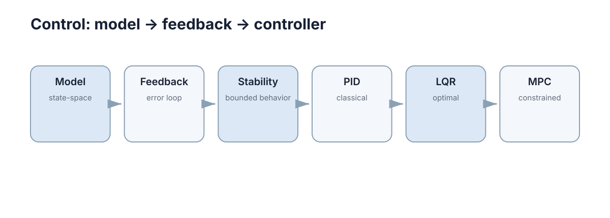

Control Theory
控制理论解决的是：怎样根据系统当前状态持续施加输入，让系统按期望方式运动，并且在扰动、误差与约束下仍然稳定。 从动态系统的状态空间模型出发，经过反馈与稳定性分析，再到 PID、LQR、MPC 三条控制律路线，本章覆盖了机器人、自动驾驶与过程控制中最常用的控制工具链。

本节要解决的问题
控制理论回答的是一类反复出现的问题：给定一个会动、会漂、会被干扰的系统，怎么让它听话。具体拆成四个子问题：
- 建模：系统的状态是什么？状态如何随时间演化？输入如何影响状态？没有模型，后续分析全是猜测。
- 反馈与稳定：开环系统为什么不可靠？闭环为什么能抵抗扰动？什么条件下系统会发散？
- 控制律设计：从最简单的 PID，到多状态最优的 LQR，再到带约束、带预测的 MPC，什么场景用哪一种？
- 可实施性：采样周期、算力预算、传感器噪声、模型误差，怎样把纸面上的控制器变成能跑的代码？
这四个子问题并不平行，而是层层递进：建模决定你能写出什么样的控制器，稳定性决定控制器是否可用，控制律决定性能，工程约束决定性能能否在真实设备上兑现。本章的目标不是让读者记住公式，而是建立"看到一个问题，知道该用哪一层工具"的判断力。
一个常见的入门误解是把控制等同于"调 PID 参数"。当系统只有一个输入一个输出、模型未知时，这个理解大致够用；但只要系统有多个耦合状态、存在硬约束、或需要前瞻多步后果，经验调参就会迅速触顶，此时必须回到建模与最优控制的正轨。
| 子问题 | 核心输出 | 典型失效 | 对应章节 |
|---|---|---|---|
| 建模 | 状态空间 \((A,B,C)\) 或 \(f(x,u)\) | 模型与真实系统不符 | 01 建模与状态空间 |
| 稳定性 | 闭环极点位置、Lyapunov 判据 | 增益过高导致振荡发散 | 02 反馈与稳定性 |
| 控制律 | 增益或优化问题 | 调参无依据、约束被忽略 | 03 PID / 04 LQR / 05 MPC |
| 可实施性 | 采样、算力、抗饱和方案 | 丢拍、饱和、噪声放大 | 全章工程讨论 |
五章的推进逻辑
五章沿"建模 → 反馈与稳定 → PID → LQR → MPC"排列，是一条由浅入深、由通用到专用的路线。
第一步建模：把物理系统写成 \(\dot x=f(x,u)\) 或离散的 \(x_{k+1}=Ax_k+Bu_k\)，明确状态、输入、输出的含义与量纲。这一步决定了后面能用的数学工具：线性模型能用 LQR，非线性模型要么线性化，要么上非线性 MPC。
第二步反馈与稳定：引入测量的闭环，讨论为什么开环不可靠，以及如何用极点、特征值、Lyapunov 函数判断稳定性。这一步给出的稳定性判据是所有控制器设计的底线。
第三步 PID：不依赖完整模型的经验型控制律，用比例、积分、微分三项分别处理"当前误差、历史误差、误差变化趋势"。它是工业界覆盖率最高的控制器，也是理解反馈直觉的最佳入口。
第四步 LQR：在拥有线性模型、关心多状态耦合时，用二次代价把"状态偏差"和"控制力度"的权衡变成优化问题，离线解出唯一最优增益。
第五步 MPC：当存在速度上限、转角限制、障碍等硬约束，且需要前瞻多步后果时，把控制变成每个周期在线求解一个带约束的优化问题。
这条顺序并非历史的偶然：它同时是按"所需信息量"递增排列的。PID 只需要误差，LQR 需要状态与模型，MPC 还需要约束与算力；每往上一层，性能上限更高，但对前置条件的依赖也更强。因此从后往前补知识是可行的，从前往后建能力才是稳妥的。
| 步骤 | 新增能力 | 付出的代价 | 前提条件 |
|---|---|---|---|
| 01 建模 | 可预测系统演化 | 需要物理知识与辨识 | 无 |
| 02 反馈 + 稳定 | 抗扰动、可判稳 | 需要可测输出 | 有模型或至少辨识 |
| 03 PID | 无需精确模型即可调 | 多回路需解耦、约束弱 | 单回路较简单 |
| 04 LQR | MIMO 最优、稳定性有保证 | 需要线性模型、无约束 | 系统可线性化 |
| 05 MPC | 显式硬约束、多步前瞻 | 每步在线求解、算力 | 模型准、算力够 |
概念地图
图中是一条从左到右的单向主线，六个节点依次是 Model、Feedback、Stability、PID、LQR、MPC。它们不是并列的知识点，而是"前一个为后一个提供前提"的依赖链：
- Model（state-space）：整条链的起点。状态空间形式把所有控制器统一在同一套符号下：A 描述自然演化，B 描述输入作用。没有它，LQR 与 MPC 无从谈起。
- Feedback（error loop）：把测量结果反送回控制器，用误差驱动输入。反馈让系统对参数误差不敏感，是"稳定"得以实现的前提。
- Stability（bounded behavior）：反馈不是自动稳定的，错误的增益会让系统发散。稳定性节点回答"什么样的闭环是安全的"。
- PID（classical）：最经典的反馈实现，把误差的比例、积分、微分线性组合成控制量，是"反馈 + 稳定"最直接的产品。
- LQR（optimal）：从"经验调参"升级到"按二次代价求最优"，用模型把多状态耦合一次性处理。
- MPC（constrained）：在最优控制之上叠加有限时域预测与显式约束，是这条链目前工程能力最强的一环。
读这张图时要注意两点：一是箭头是单向的，右侧节点的正确性依赖左侧全部节点，跳过建模直接看 MPC 往往会卡在"状态从哪来、约束怎么写"；二是图中的三条控制律（PID、LQR、MPC）是并列选项，不是必须依次使用的升级路径，实际项目中常常只用其中一种。
| 节点 | 图中副标题 | 一句话职责 | 输入 | 输出 |
|---|---|---|---|---|
| Model | state-space | 描述系统如何演化 | 物理方程/数据 | \(A,B,C\) 或 \(f\) |
| Feedback | error loop | 用误差驱动输入 | 测量与参考 | 误差信号 |
| Stability | bounded behavior | 判断闭环是否有界 | 闭环系统 | 稳定/不稳定 |
| PID | classical | 经验反馈律 | 误差 | 控制量 |
| LQR | optimal | 二次代价最优反馈 | 状态与权重 | 增益 \(K\) |
| MPC | constrained | 带约束在线优化 | 状态、模型、约束 | 首步输入 |
与其他章节的接口
控制理论不是孤岛：它向下依赖数学工具，向上服务机器人与自动驾驶，旁边还与感知、安全模块交互。理解这些接口，才能把某一章的知识放进完整系统里。
具体地说，状态估计与控制构成"感知—决策"回路：感知模块提供状态，控制器据此生成输入，输入作用于物理系统后又被感知重新观测，闭环的稳定性同时取决于控制器增益与估计器延迟。因此控制章节里的"模型"往往不是从零推导的物理方程，而是从 图像与相机基础 等感知模块延伸出来的可测量量。
| 控制概念 | 用在哪章 | 解决什么问题 |
|---|---|---|
| 状态空间建模 | 动态系统建模与状态空间 | 把物理系统写成可计算的形式 |
| 稳定性判据 | 反馈控制与稳定性 | 判断闭环是否发散 |
| 误差反馈直觉 | PID 控制 | 无需精确模型即可调参 |
| 可控性 / 可稳性 | 最优控制与 LQR | 判断能否用状态反馈镇定 |
| 有限时域与终端代价 | 模型预测控制 | 保证滚动优化的稳定性 |
| 约束优化与不确定性 | 约束下优化 | QP 与鲁棒问题求解 |
| 参考轨迹跟踪 | 路径与运动规划 | 把规划结果转成控制目标 |
| 导航闭环 | 导航与控制 | 定位—规划—控制串成回路 |
| 状态估计接口 | 图像与相机基础 | 控制器拿到的状态来自感知 |
| 硬约束与安全边界 | 安全约束 | 约束如何被形式化与保证 |
从理论到实机的差距
教科书里的控制器通常在"理想仿真"中诞生：连续时间、无噪声、模型精确、算力无限。实机上这四条假设几乎全部不成立。理解差距在哪里，比多记一条公式更重要。
- 采样与延迟：理论模型常用连续时间，实机却是离散采样。控制周期 \(\Delta t\) 引入的相位滞后会降低稳定裕度，\(\Delta t\) 越大、可控带宽越低。
- 噪声与量化：编码器有噪声，微分项会把它放大成剧烈抖动的输入，必须滤波或改用微分状态。
- 模型误差：质量、摩擦、时延都难以精确辨识，纯状态反馈会留下稳态误差，LQR 需要配积分项。
- 执行器限制：电机有转矩上限、舵机有转角上限，饱和会让 LQR 的最优性失效，甚至引发积分饱和。
- 算力约束：MPC 每步要解 QP，算力不足时会丢拍，性能反而不如稳定的 PID。
这些差距不是"实现细节"，而是决定成败的主因。经验上，从仿真到实机后需要重新整定的部分，往往集中在采样率、滤波与饱和处理三处；若忽略它们，纸面性能再好也可能在现场直接发散。
| 仿真里有的假设 | 实机上通常缺失 | 后果 | 缓解手段 |
|---|---|---|---|
| 连续时间模型 | 离散采样 | 相位滞后、带宽下降 | 提高采样率、降增益 |
| 无噪声测量 | 传感器噪声 | 微分放大抖动 | 滤波、观测器 |
| 模型精确 | 参数与时延误差 | 稳态偏差、动态偏移 | 积分作用、鲁棒化 |
| 执行器无上限 | 转矩/转角饱和 | 最优性丧失、饱和振荡 | 抗饱和、改 MPC |
| 算力无限 | 计算预算有限 | MPC 丢拍 | 限 \(N\)、warm start |
阅读顺序建议
不同背景的读者不必按同一顺序读，可用下面三条路径之一：
- 零基础入门：按 01 → 02 → 03 顺序读，先把"建模—反馈—调参"的直觉建立起来，再进入 04 LQR 与 05 MPC。
- 有控制基础、想补最优控制：可跳过 PID 细节，直接从 01 建模 快速过一遍状态空间，再精读 04 LQR 与 05 MPC 的 Riccati、QP 与稳定性部分。
- 做机器人项目、想快速落地：从 03 PID 和 04 LQR 入手把闭环跑通，再对照 05 MPC 的"何时该用 MPC"表格判断是否需要升级，同时参考 导航与控制 的整机回路。
三条路径的共同底线相同：必须理解 §建模 与 §稳定性，否则任何控制器都只是抄来的代码。选择哪条路径取决于你手上是"没有模型"还是"已有模型但缺控制律"。若时间有限、只想先让东西动起来，可以先用 §PID 拿到一个能跑的基线，再回头补 §稳定性 来解释它为什么在某些参数下会震荡。
如果暂时拿不定主意，可以按下面的问题自测：
- 你的系统有可辨识的物理模型吗？有 → 可考虑 LQR/MPC；没有 → 先 PID。
- 有必须满足的速度、转角或几何约束吗？有 → 指向 MPC。
- 控制周期在 1 ms 量级吗？是 → 偏向 PID/LQR。
- 有多个强耦合状态吗？有 → 放弃单回路 PID。
本章导航
- 动态系统建模与状态空间——状态、输入、输出的形式化，线性化与离散化。
- 反馈控制与稳定性——闭环为什么抗扰动，如何判断与保证稳定。
- PID 控制——比例、积分、微分的分工、调参方法与失效模式。
- 最优控制与 LQR——二次代价、Riccati 方程、Bryson 规则与积分作用。
- 模型预测控制——有限时域预测、约束、QP 形式与终端代价。
下一步：从 动态系统建模与状态空间 开始，先建立"状态如何演化"的直觉；如果你已有模型、只想选控制律，可直接跳到 最优控制与 LQR；若你的系统存在硬约束，优先阅读 模型预测控制；把整套控制回路放进机器人系统的例子见 导航与控制。